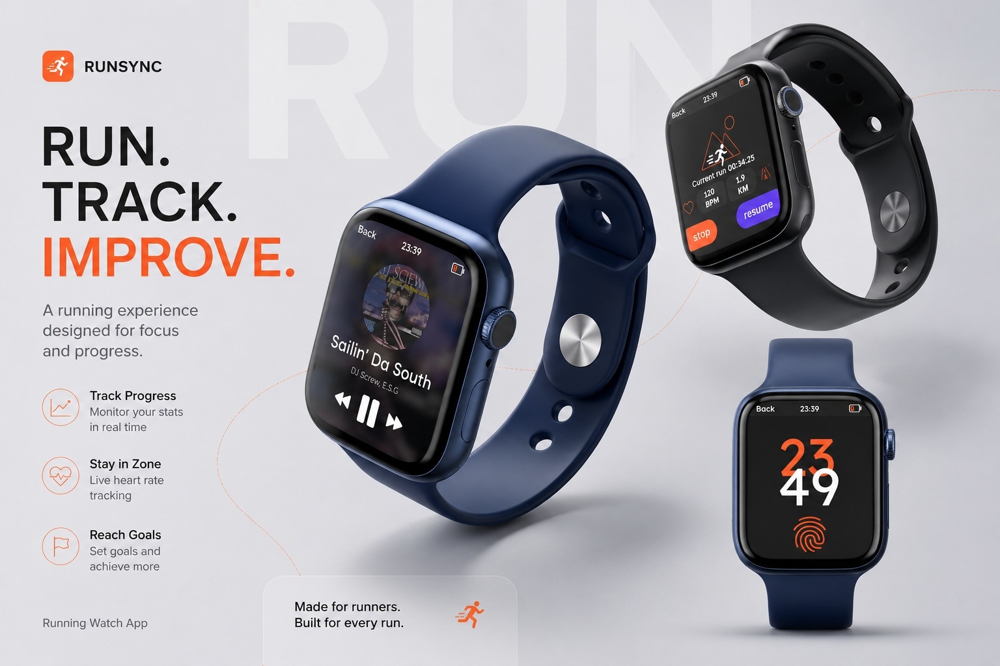
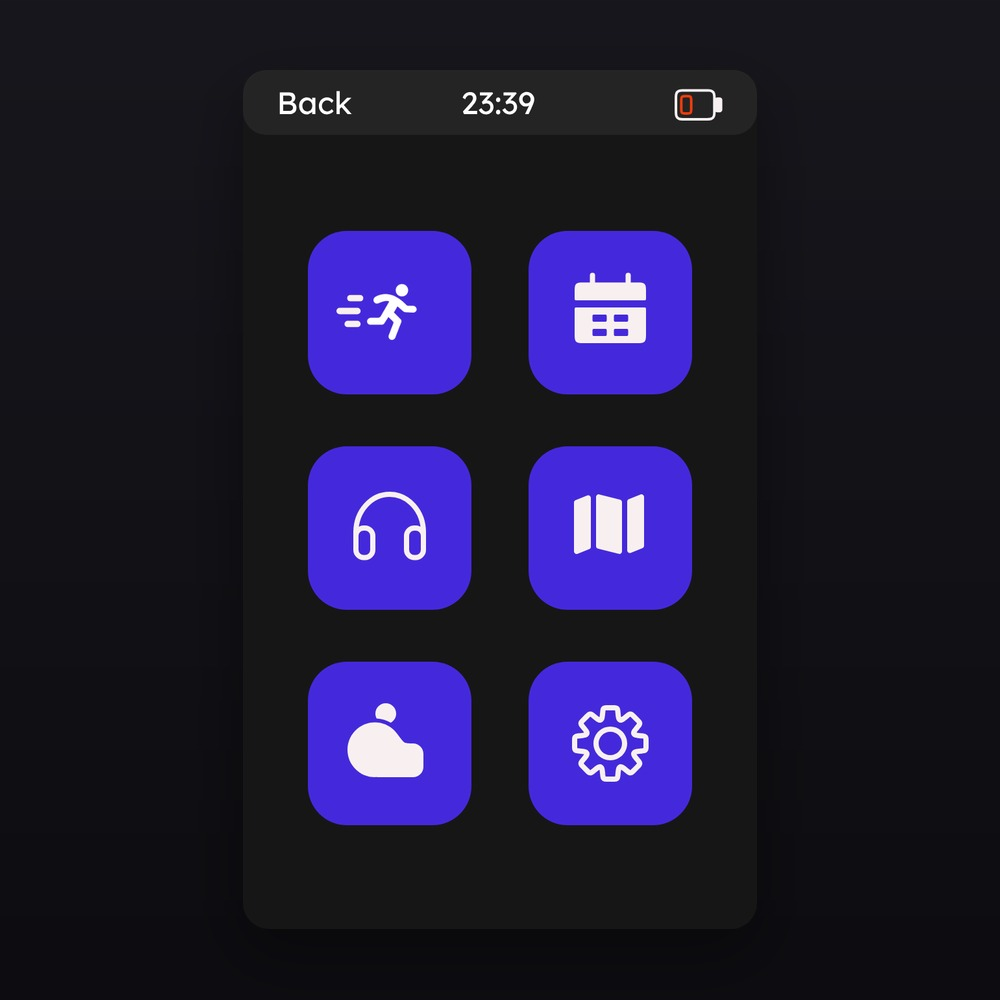
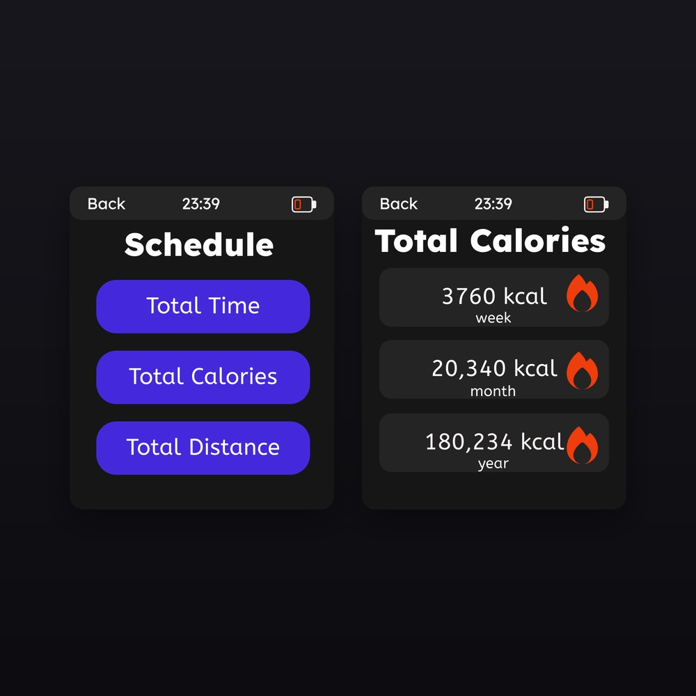
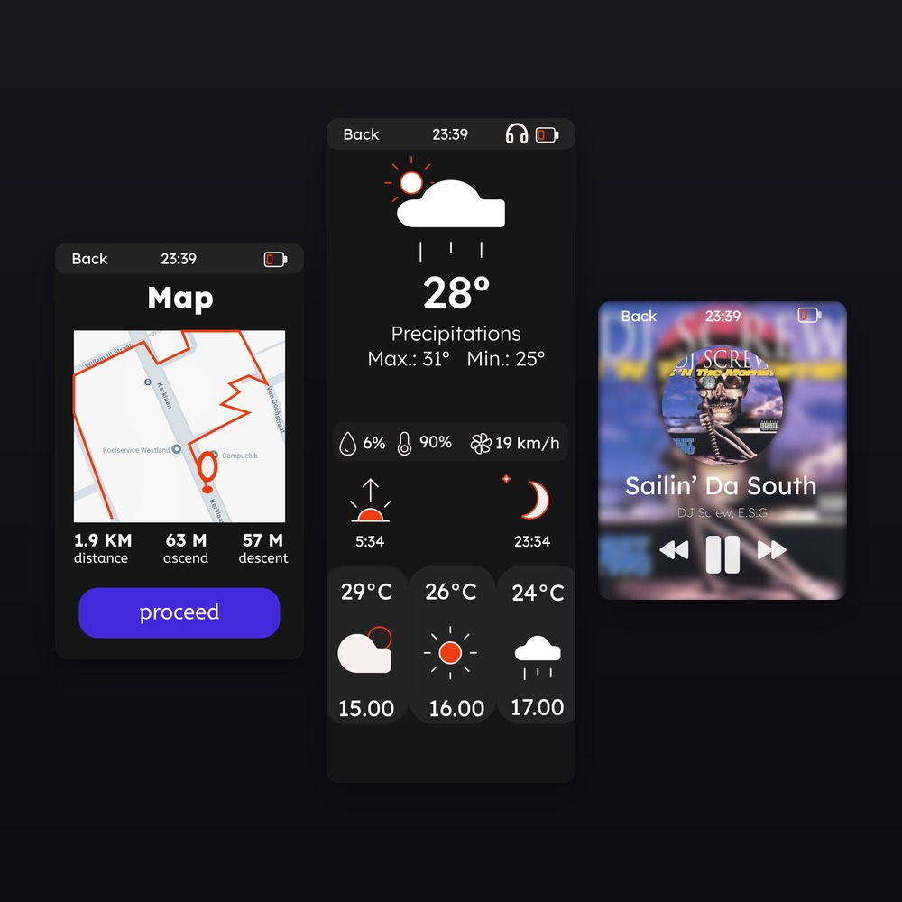

RunSync
A running app designed for a smartwatch — small enough to read at a glance mid-stride, complete enough to run a whole workout from the wrist. Built solo to a brief that capped the screen at 60×60mm, then reshaped around what five testers actually reached for.
- Year
- 2025
- Category
- UI/UX Design · Wearable Design · Running App

Concept
At 60×60mm every element competes for the same glance. So the wrist is treated as a glanceable surface rather than a small phone: three numbers while you run, everything else one tap deeper. Mid-stride a runner shouldn't have to read the screen — only recognise it.
Highlights of the UX
- Full control of the run. Start, pause, resume and stop — each with its own confirmation screen, so a mis-tap on a moving wrist never ends a workout by accident.
- Real-time stats, and the history behind them. Live time, heart rate and distance during the run; totals for calories, distance and time broken down by week, month and year.
- Everything around the run. Music, weather, a route map, a post-run progress overview, and short confirmation messages as a run starts and ends.



Process
Five stages, each one narrowing the design a little further — from blocking out screens at true size, to a prototype people could actually run a workout on.
- Wireframes. Blocking out every screen at true size, to find out how much actually fits in 60×60mm before any styling could hide the problem.
- Low-fi prototype. Wiring those wireframes together into a clickable flow, so the run loop could be walked through end to end rather than judged screen by screen.
- User testing. Five participants ran through the prototype — where they hesitated, and what they went looking for and couldn't find, set the next round of work.
- Iterations. Testing is what put the map, the weather screen, music control and the post-run messages into the app; none of them were in the original brief.
- High-fi prototype. The final visual pass — dark UI for outdoor legibility, one accent for actions and one for live data — built as the working prototype below.
Outcome
The brief asked for a running mode, pause and resume, and a training history. What testing turned it into was a small system you can live in for the length of a run — and the features people asked for unprompted were the ones that made it feel finished.
Start on the watch face and tap through — the menu, schedule, map, weather and the full run loop are all wired up. Open in Figma ↗
Like what you see?
← Back to all work